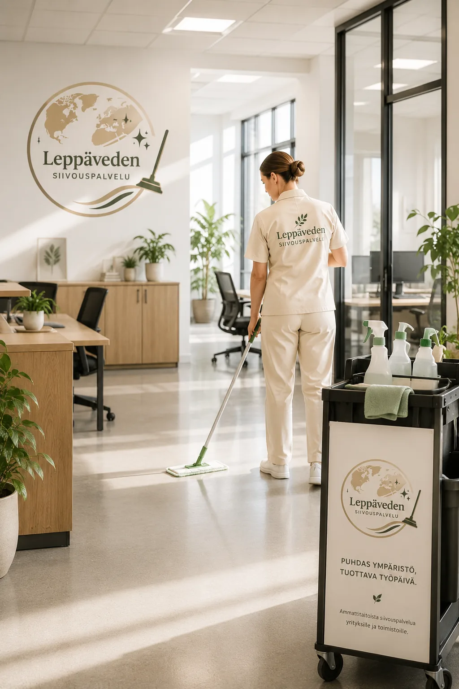

Paikallinen siivouskumppani yrityksille
Yrityssiivous Jyväskylässä, Laukaassa ja Leppävedellä
Pidä toimisto, liiketila tai muu toimitila siistinä ja edustavana. Yrityssiivous suunnitellaan tilan käytön, toivotun puhtaustason ja sopivan käyntivälin mukaan.

Joustava yrityssiivous Jyväskylän seudulla
Siisti työympäristö lisää viihtyvyyttä ja antaa asiakkaillesi hyvän ensivaikutelman. Leppäveden Siivouspalvelu tarjoaa yrityssiivousta Jyväskylässä, Laukaassa ja Leppävedellä pienille ja keskisuurille toimitiloille.
Palvelu voidaan toteuttaa säännöllisenä ylläpitosiivouksena tai erikseen sovittavana siivouskäyntinä. Sisältö, käyntitiheys ja ajankohta sovitaan aina yrityksesi tarpeiden mukaan.
Mitä yrityssiivous voi sisältää?
Tarkka palvelusisältö määritellään kohteen ja puhtaustavoitteen perusteella. Yrityssiivoukseen voidaan sisällyttää esimerkiksi:
- ToimistosiivousTyöpisteiden vapaiden pintojen, neuvottelutilojen ja yhteisten tilojen siivous.
- Lattioiden puhdistusImurointi ja lattiamateriaalille sopiva nihkeä- tai kosteapyyhintä.
- WC- ja pesutilatWC-istuinten, altaiden, hanojen, peilien ja kosketuspintojen puhdistus.
- Keittiö- ja taukotilatTyötasojen, altaiden ja vapaiden pintojen pyyhintä sovitussa laajuudessa.
- Roskien tyhjennysRoskakorien tyhjennys ja pussien vaihto kohteen käytäntöjen mukaan.
- IkkunanpesuIkkunoiden ja lasipintojen pesu voidaan sopia erillisenä lisäpalveluna.
Toimisto- ja toimitilasiivous
Yrityssiivous sopii esimerkiksi toimistoihin, liiketiloihin, vastaanottotiloihin, sosiaalitiloihin ja muihin pieniin yrityskohteisiin. Siivouksen laajuuteen vaikuttavat tilan koko, käyttäjämäärä, pintamateriaalit ja toivottu käyntiväli.
Kun pyydät tarjouksen, kerro tilojen sijainti, neliömäärä, tilatyyppi ja kuinka usein siivousta tarvitaan. Näin palvelusta voidaan laatia yrityksellesi tarkoituksenmukainen kokonaisuus.
Säännöllinen ylläpitosiivous pitää toimitilat edustavina
Toimistossa ja muissa yhteisissä toimitiloissa lika kertyy erityisesti sisäänkäynteihin, lattioille, keittiö- ja taukotiloihin sekä usein kosketettaville pinnoille. Säännöllinen ylläpitosiivous auttaa säilyttämään sovitun puhtaustason ja vähentää tarvetta kiireellisille siivouskäynneille.
Toimistosiivouksen sopiva käyntiväli riippuu tilojen käyttäjämäärästä, asiakasliikenteestä, vuodenajasta ja tilan käyttötarkoituksesta. Pienelle toimistolle voi riittää harvempi käynti, kun taas aktiivisesti käytetty liiketila tai vastaanotto voi tarvita siivousta useammin. Palvelu suunnitellaan todellisen tarpeen mukaan.
Yrityssiivouksen hinta muodostuu kohteen mukaan
Yrityssiivoukselle ei ole yhtä kaikille kohteille sopivaa hintaa. Tarjoukseen vaikuttavat siivottava pinta-ala, tilojen määrä ja käyttötarkoitus, valitut työtehtävät, siivouksen vaativuus sekä käyntien tiheys. Myös erikseen sovittavat lisätyöt, kuten ikkunanpesu, huomioidaan tarjouksessa.
Selkeästi rajattu palvelusisältö tekee kustannuksista ennakoitavia. Kerro tarjouspyynnössä mahdollisimman tarkasti kohteen tiedot ja toiveet, niin saat yrityksellesi sopivaan kokonaisuuteen perustuvan tarjouksen ilman sitoumusta.
Näin yrityssiivous aloitetaan
- 1Kerro kohteesta
Lähetä tilojen perustiedot ja toivottu siivoustarve.
- 2Sovitaan sisältö
Määritellään tehtävät, käyntiväli ja sopiva ajankohta.
- 3Saat tarjouksen
Tarjous perustuu sovittuun palvelusisältöön ja kohteeseen.
Usein kysyttyä yrityssiivouksesta
Kuinka usein yrityssiivouksen voi tilata?
Käyntiväli sovitaan tilojen käytön ja siivoustarpeen mukaan. Palvelu voi olla säännöllinen tai yksittäinen siivouskäynti.
Mitä yrityssiivous maksaa?
Hintaan vaikuttavat muun muassa kohteen koko, tilatyyppi, palvelun sisältö ja käyntitiheys. Saat kohteeseen perustuvan hinnan pyytämällä tarjouksen.
Onnistuuko toimistosiivous työajan ulkopuolella?
Sopiva siivousajankohta sovitaan tarjousvaiheessa kohteen tarpeiden ja käytännön mahdollisuuksien mukaan.
Voiko yrityssiivoukseen lisätä ikkunanpesun?
Kyllä. Ikkunanpesu voidaan sopia erilliseksi lisäpalveluksi.
Pyydä tarjous yrityssiivouksesta
Kerro toimitilan koko, sijainti ja toivottu siivousrytmi. Otamme yhteyttä mahdollisimman pian.